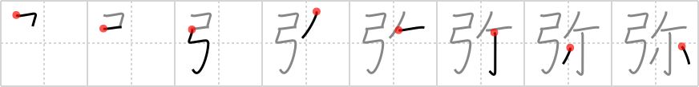

弥
← →
more and more

Reading:
On-Yomi: ミ、ビ — Kun-Yomi: いや、や、あまねし、いよいよ、とおい、ひさし、ひさ.しい、わた.る
Heisig story:
Bow . . . reclining . . . little.
Koohii stories:
1) [mantixen] 23-7-2009(56): If I recline back, I can pull my bow open a little more and more.
2) [icamonkey] 13-8-2009(17): More and more bows were made to kill people, until they were laid down for better smaller guns.
3) [Aerin] 30-10-2007(15): The bow dug more and more into the small of his back as he reclined on it. Will someone please tell the idiot to get up?
4) [astridtops] 24-4-2007(9): Little Clark Kent, who was found reclining in his spaceship as a baby, grew more and more stronger over the years, and found he could fly as fast as an arrow shot by a bow.
5) [Corodon] 10-12-2011(7): More and more archers shoot their bows while reclining a little. It's a very popular stance.